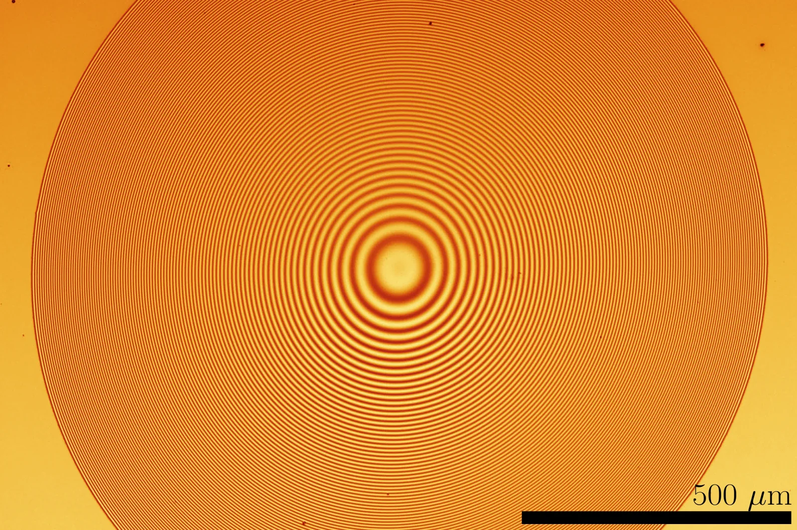
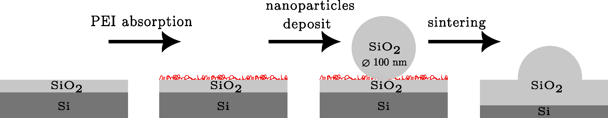
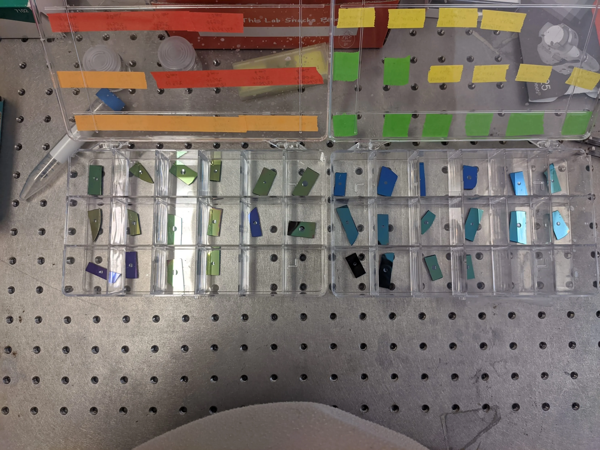
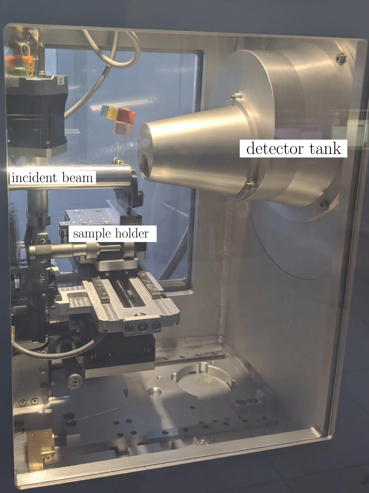
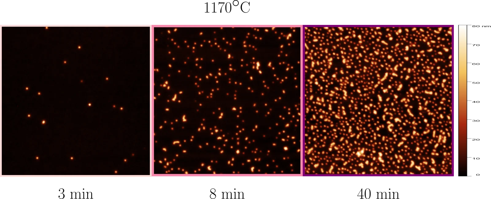
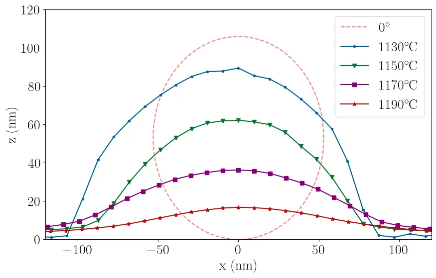
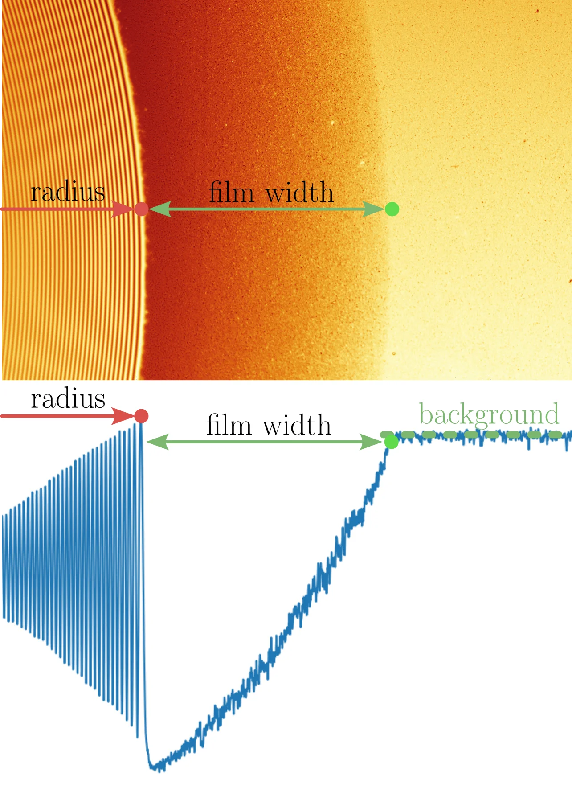
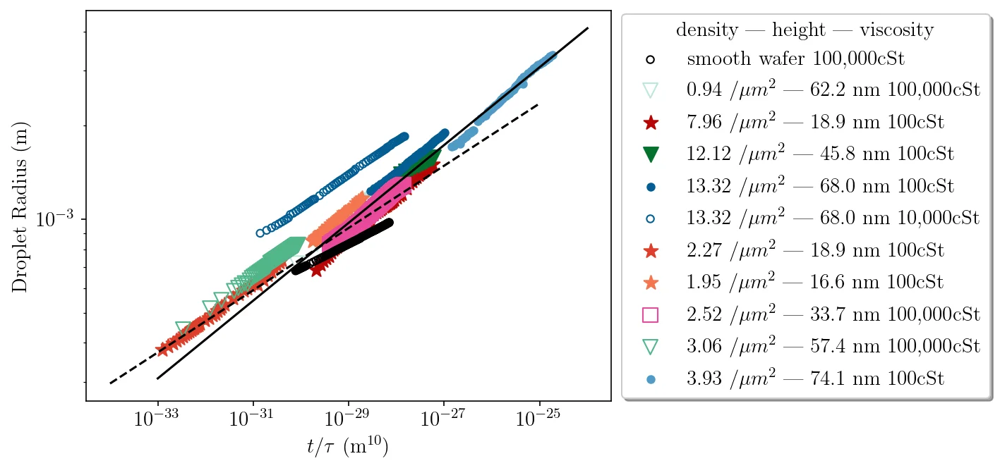
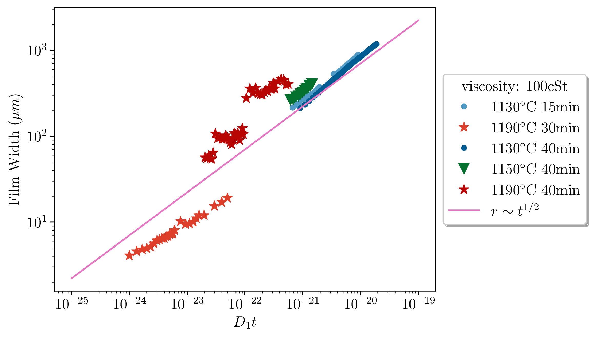
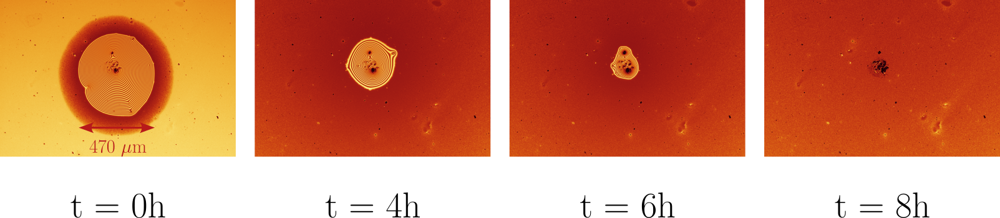

Aperçu
Durée : Juin – Septembre 2024
Lieu : Laboratoire Léon Brillouin, CEA Saclay
Encadrante : Marion Grzelka
Domaine : Physique de la Matière Molle et Science des Surfaces
Le problème
Quand vous renversez de l'eau sur une table, elle s'étale. La physique semble simple, jusqu'à ce qu'on regarde de près. Au bord mobile d'une goutte qui s'étale, la mécanique des fluides classique prédit une dissipation d'énergie infinie. C'est le paradoxe de Huh-Scriven, et le résoudre nécessite de comprendre ce qui se passe à l'échelle nanométrique.
La solution implique un film précurseur : une fine couche de liquide, de seulement quelques nanomètres d'épaisseur, qui avance devant le bord visible de la goutte. Ce film dissipe l'énergie qui autrement divergerait dans nos équations. Sur les surfaces atomiquement lisses, on comprend bien ce phénomène. Mais les vraies surfaces ne sont jamais atomiquement lisses.
C'est là que ça devient intéressant. Sur les surfaces avec une rugosité micrométrique, un phénomène différent prend le relais : le hemiwicking, où les forces capillaires entraînent le liquide à travers les structures de surface. La physique change complètement. Mais que se passe-t-il entre les deux, quand les défauts de surface font quelques nanomètres de haut, comparables au film précurseur lui-même ?
La loi d'étalement classique tient-elle encore quand la rugosité de surface correspond à l'épaisseur du film précurseur ? Un film précurseur se forme-t-il même dans ces conditions ?
C'était inconnu. J'ai entrepris de répondre à ces questions expérimentalement.

Image au microscope (vue de dessus) d'une goutte s'étalant sur une surface lisse, montrant la figure d'interférence des anneaux de Newton
Pourquoi c'est difficile
Trois défis rendaient ce problème expérimentalement inaccessible jusqu'à présent :
Fabrication : Créer des surfaces avec des défauts nanométriques contrôlés (20–80 nm de haut) distribués uniformément sur des zones centimétriques. La lithographie par faisceau d'électrons est trop lente. La photolithographie n'est pas assez précise. J'avais besoin d'une approche différente.
Caractérisation : Mesurer des hauteurs de défauts de quelques dizaines de nanomètres tout en cartographiant leur distribution spatiale sur de grandes zones nécessite de combiner plusieurs techniques à différentes échelles.
Dynamique : Suivre une goutte qui s'étale dont le rayon suit une loi de puissance en \(t^{1/10}\) signifie que le comportement intéressant s'étend sur des heures voire des jours. Cela demande une analyse automatisée de centaines de séquences d'images.
Mon approche
1. Ingénierie des surfaces
J'ai utilisé la lithographie douce avec des nanoparticules de silice chargées (~100 nm de diamètre). Les particules se repoussent électrostatiquement, produisant des distributions uniformes sans agrégation. En contrôlant deux paramètres, la température de frittage (1130–1190°C) et le temps d'incubation (0–50 min), j'ai ajusté indépendamment la hauteur et la densité des défauts.
Cela a produit 32 surfaces distinctes couvrant :
- Des hauteurs de 20 nm à 80 nm
- Des densités de 0 à 12 défauts/μm²
Le processus de frittage transforme également la géométrie des défauts : à basse température, les défauts restent des calottes sphériques ; à haute température, ils s'aplatissent en profils de type gaussien. Cela compte pour la physique.

Fabrication de surfaces nano-texturées par lithographie douce et frittage

Réseau de surfaces nano-texturées montrant l'étalement de gouttes
2. Caractérisation multi-échelle
Taille des nanoparticules (SAXS/SANS) : J'ai mesuré le diamètre initial des particules à 106,2 ± 8,5 nm par diffusion des rayons X aux petits angles, confirmé par diffusion de neutrons à l'ILL Grenoble. Cela établit la référence avant frittage.

Montage de diffusion des rayons X aux petits angles (SAXS) pour la détermination de la taille des particules
Topographie de surface (AFM) : J'ai cartographié chaque surface sur 10 μm × 10 μm avec une résolution de 1024 échantillons/ligne, suffisamment haute pour résoudre les profils individuels des défauts tout en couvrant des zones statistiquement significatives. De ces cartes, j'ai extrait les distributions de hauteur, les densités de défauts et le paramètre de rugosité \(r\) nécessaire aux prédictions théoriques.

Topographie AFM 3D montrant la distribution des défauts à différentes densités

Profils en coupe montrant l'évolution de formes sphériques (1130°C) à aplaties (1190°C)
3. Analyse optique automatisée
Suivre manuellement l'étalement des gouttes sur des centaines d'expériences n'était pas faisable. J'ai construit un pipeline Python qui :
- Détecte les franges d'interférence (anneaux de Newton) dans la goutte qui s'étale
- Extrait le rayon de la goutte des positions des franges
- Mesure la largeur du film précurseur à partir des gradients d'intensité
- Calcule le volume de la goutte à partir du profil de hauteur reconstruit
La figure d'interférence encode la forme de la goutte : chaque frange brillante correspond à un changement de hauteur de \(\lambda/2n \approx 174\) nm (pour une lumière à 488 nm dans l'huile de silicone avec \(n = 1,4\)).

Analyse d'image de goutte montrant les motifs d'interférence et le profil d'intensité extrait
Résultats
Le résultat central
La théorie classique prédit qu'une goutte s'étalant sur une surface plane suit la loi de Tanner :
\[ r \sim \left(\frac{\gamma V^3 t}{\eta}\right)^{1/10} \]
où \(r\) est le rayon, \(V\) est le volume, \(\gamma\) est la tension de surface, \(\eta\) est la viscosité, et \(t\) est le temps. L'exposant 1/10 émerge de l'équilibre entre les forces capillaires motrices et la dissipation visqueuse : c'est une signature de la physique sous-jacente.
L'attente était que les défauts nanométriques pourraient perturber cela. Quand la hauteur des défauts approche l'épaisseur du film, le liquide rencontre des obstacles comparables à sa propre profondeur. Les travaux théoriques de Cormier et al. (2012) suggéraient que des films suffisamment épais pourraient faire basculer la dynamique vers un régime différent (loi en \(t^{1/2}\)).
Ce que j'ai trouvé : la loi de Tanner est valide sur toutes les surfaces testées.
Hauteurs de défauts de 20 à 80 nm, densités de 0 à 12 défauts/μm², viscosités couvrant trois ordres de grandeur, les données se regroupent sur une seule courbe maîtresse quand elles sont correctement renormalisées :
\[ r \text{ vs. } t/\tau, \quad \text{où } \tau = \eta/(\gamma V^3) \]
C'est un résultat important. Cela signifie que la rugosité nanométrique, au moins dans ces paramètres, n'altère pas fondamentalement le mécanisme d'étalement. Le cadre classique reste valide.

Courbe maîtresse du rayon de gouttes sur diverses surfaces nano-texturées suivant la loi prédite en \(t^{1/10}\)
Le film précurseur
Sur les surfaces lisses, aucun film visible ne se forme devant la goutte. Sur mes surfaces nano-texturées, un film distinct apparaît, et sa dynamique suit une loi différente :
\[ W_f \sim \sqrt{D_1 t}, \quad \text{où } D_1 = \frac{2\gamma(r-1)h}{\eta} \]
Ici \(W_f\) est la largeur du film, \(h\) est la hauteur du film, et \(r\) est le paramètre de rugosité des mesures AFM. Cette loi en \(\sqrt{t}\) est caractéristique d'un étalement piloté par diffusion, le régime de hemiwicking.
Le film est visible en microscopie optique comme un gradient entourant le bord de la goutte. Sa largeur est corrélée à la hauteur des défauts : des défauts plus grands favorisent des films plus larges. C'est cohérent physiquement : des structures de surface plus grandes créent des forces capillaires motrices plus fortes.

Courbe maîtresse de la largeur du film pour des gouttes sur diverses surfaces nano-texturées suivant la loi prédite en \(t^{1/2}\)
Une observation inattendue
Pour les très petites gouttes (\(V < 0.001\) μL), j'ai observé quelque chose que la théorie ne prédit pas : la goutte macroscopique disparaît entièrement tandis que le film continue de s'étaler. La goutte agit comme un réservoir que le film draine complètement.
Cela fixe une limite inférieure pratique sur le volume de goutte pour ces expériences. Cela soulève aussi des questions sur les hypothèses de conservation du volume dans le cadre théorique.

Goutte disparaissant après que le film a épuisé son réservoir
Ce que cela signifie
Pour le domaine
C'est la première étude expérimentale systématique de la dynamique de mouillage sur des surfaces avec une rugosité nanométrique contrôlée. Les travaux précédents examinaient soit des surfaces atomiquement lisses (validant les films précurseurs) soit des textures micrométriques (caractérisant le hemiwicking). Le régime nanométrique, où la hauteur des défauts correspond à l'épaisseur du film, restait inexploré.
Le résultat clé est que la loi de Tanner est plus robuste qu'attendu. Cela contraint les modèles théoriques : tout cadre pour le mouillage sur surfaces rugueuses doit se réduire à une loi en \(t^{1/10}\) dans cette gamme de paramètres.
Pour les applications
Comprendre quand la théorie classique du mouillage s'applique, et quand elle échoue, importe pour :
Procédés de revêtement : Si vous concevez un revêtement qui doit s'étaler uniformément sur un substrat texturé, savoir que la loi de Tanner tient à l'échelle nanométrique signifie que vous pouvez utiliser les modèles établis pour la conception du procédé. La texture n'introduira pas de dynamique inattendue.
Microfluidique : Les surfaces de canaux dans les dispositifs microfluidiques sont rarement atomiquement lisses. Ce travail suggère qu'une rugosité nanométrique modérée n'altérera pas fondamentalement l'écoulement piloté par capillarité, ce qui simplifie la conception des dispositifs.
Impression jet d'encre : L'étalement de gouttes sur papier ou substrats polymères implique des structures de surface nanométriques. La robustesse de la loi de Tanner fournit un cadre prédictif.
Questions ouvertes
Plusieurs observations restent inexpliquées :
Où la loi de Tanner échoue-t-elle ? Ma gamme de paramètres (hauteur 20–80 nm, densité 0–12 défauts/μm²) a montré une loi en \(t^{1/10}\) cohérente. Des défauts plus grands ou des géométries différentes pourraient révéler des transitions vers d'autres régimes.
Qu'est-ce qui détermine l'épaisseur du film ? J'ai observé les films optiquement mais n'ai pas pu mesurer leur épaisseur directement. La réflectivité de neutrons ou de rayons X pourrait résoudre cela.
Pourquoi les petites gouttes disparaissent-elles ? Le volume critique en dessous duquel la goutte est entièrement consommée par le film, et le mécanisme pilotant cette transition, nécessitent une quantification.
Qu'est-ce qui cause la variation d'un lot à l'autre dans les couches d'oxyde ? Certaines surfaces à 1190°C ont montré des différences inattendues dans la visibilité du film malgré des protocoles identiques. La dynamique d'étalement n'était pas affectée, mais l'origine de cette variabilité n'est pas claire.
Détails techniques
Paramètres expérimentaux (cliquer pour développer)
Fabrication des surfaces
- Substrat : Wafers de silicium (Siegert Wafer)
- Nanoparticules : 100 nm silice, 0,02% v/v (Polyscience)
- Couche d'adhésion PEI : 1 g/L, 1 heure d'incubation
- Frittage : 1130–1190°C pendant 2 heures, rampe de 600°C/h
- Temps d'incubation : 0, 3, 6, 8, 15, 30, 40, 50 minutes
Caractérisation
- SAXS : diffractomètre XEUSS 2.0, λ = 1,542 Å, distance échantillon-détecteur 2488 mm
- SANS : instrument SAM à l'ILL Grenoble
- AFM : Bruker FastScan, mode tapping, scans 10 μm × 10 μm, 1024 échantillons/ligne
Expériences d'étalement
- Liquide : Polydiméthylsiloxane (huile de silicone), 100 et 100 000 cSt
- Dépôt de goutte : fibre en acier inoxydable de 0,25 mm
- Imagerie : microscope inversé Leica DMi8, LED 475 nm, filtre passe-bande 488 nm
- Analyse : Python 3.12 (scikit-image, NumPy, SciPy, pandas)
Mesures clés
- Diamètre des nanoparticules (SAXS) : 106,2 ± 8,5 nm
- Hauteurs des défauts : 20–80 nm (dépendant de la température)
- Densités des défauts : 0–12 défauts/μm² (dépendant du temps d'incubation)
- Total de séquences d'étalement analysées : >300
Ressources
- Rapport de mémoire complet – Télécharger le PDF (1,8 Mo)
- Code d'analyse – Voir sur GitLab
- Formation FAN 2024 – Institut Laue-Langevin, Grenoble